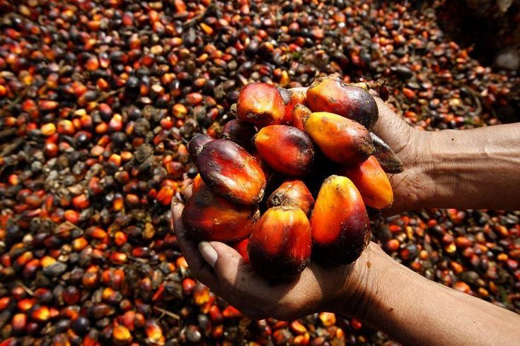

Kualitas Bahan Baku
Mutu tandan buah segar (TBS) menjadi salah satu faktor yang memengaruhi kualitas hasil pengolahan.
PTPN IV PalmCo hadir untuk bertumbuh bersama melalui agribisnis terintegrasi, operasional unggul, dan praktik berkelanjutan.
PT Perkebunan Nusantara IV (PTPN IV) atau PalmCo merupakan subholding PT Perkebunan Nusantara III (Persero), dengan kelapa sawit sebagai komoditas utama. Perusahaan menjalankan usaha agribisnis dan agroindustri serta mengembangkan bisnis hilir terintegrasi.
PTPN IV menetapkan tujuan untuk mengutamakan kepercayaan pelanggan, memperkuat keunggulan operasional, membangun SDM unggul dan beretika, menjaga lingkungan, mengembangkan hilir, serta mendukung ketahanan pangan dan energi. PKS Dolok Sinumbah merupakan unit operasional di Kabupaten Simalungun yang menjadi fokus profil ini.
Menjadi perusahaan global berbasis Agribisnis terintegrasi dan berkelanjutan.
PTPN IV PalmCo menetapkan enam arah strategis untuk menciptakan nilai bagi pelanggan, masyarakat, pemegang saham, dan generasi mendatang.
Mutu produk CPO dan inti sawit menjadi aspek penting dalam kegiatan pengolahan kelapa sawit. Pengendalian kualitas dilakukan dengan memperhatikan karakteristik bahan baku dan parameter mutu hasil produksi.
Mutu tandan buah segar (TBS) menjadi salah satu faktor yang memengaruhi kualitas hasil pengolahan.
Pengaturan tahapan pengolahan berperan dalam menjaga karakteristik dan mutu produk yang dihasilkan.
Pemeriksaan asam lemak bebas (ALB), kadar air, dan kadar kotoran digunakan untuk menilai mutu produk.

PKS Dolok Sinumbah menjalankan kegiatan pengolahan tandan buah segar (TBS) melalui serangkaian tahapan produksi yang meliputi penerimaan buah, perebusan, penebahan, pengempaan, klarifikasi, hingga pengolahan biji untuk menghasilkan CPO dan inti sawit.
PTPN IV mengembangkan sumber daya manusia melalui program pelatihan, peningkatan kompetensi, dan pengelolaan talenta. Upaya ini dilakukan untuk membentuk tenaga kerja yang profesional, adaptif, serta mampu mendukung pencapaian tujuan perusahaan.
PTPN IV terus mendorong penerapan praktik perkebunan berkelanjutan melalui pengelolaan limbah, pemanfaatan energi terbarukan, pengurangan emisi, serta pelestarian lingkungan di wilayah operasional perusahaan.

Menjaga kepercayaan pelanggan dengan produk berkualitas yang konsisten memenuhi harapan.
Mendorong perbaikan berkelanjutan, inovasi, dan praktik digital untuk memperkuat keunggulan operasional.

Membangun SDM unggul, mendukung masyarakat, dan menjaga lingkungan untuk generasi mendatang.


PTPN IV PalmCo mendorong ekonomi sirkular, pelestarian lingkungan, pengembangan hilir, serta kontribusi bagi ketahanan pangan dan energi.
PTPN IV PalmCo memperkuat operasional, mengembangkan nilai tambah produk, dan menjaga keberlanjutan lingkungan serta kesejahteraan masyarakat.
Tentang PTPN IVPTPN IV Bergerak di Bidang Agribisnis dan Agroindustri
Tandan buah segar diproses melalui tahapan operasional pabrik sebagai bahan baku produk kelapa sawit.
Lihat tahapan operasional
CPO dihasilkan dari pengolahan TBS dan menjadi bahan baku bagi berbagai industri pengolahan.
Informasi produk CPO
Biji kelapa sawit diolah untuk memisahkan inti dari cangkangnya sebagai produk hasil pengolahan.
Informasi pengolahan kernel
Tahapan pengolahan TBS untuk menghasilkan minyak sawit mentah.
Info selengkapnya
Tahapan pemisahan dan pengolahan biji sawit untuk menghasilkan inti sawit.
Info selengkapnya


Informasi mengenai inisiatif dan praktik keberlanjutan perusahaan.
Info selengkapnya
Informasi mengenai inisiatif dan praktik keberlanjutan perusahaan.
Info selengkapnya
Informasi mengenai inisiatif dan praktik keberlanjutan perusahaan.
Info selengkapnya
Informasi mengenai inisiatif dan praktik keberlanjutan perusahaan.
Info selengkapnya
Informasi mengenai inisiatif dan praktik keberlanjutan perusahaan.
Info selengkapnya